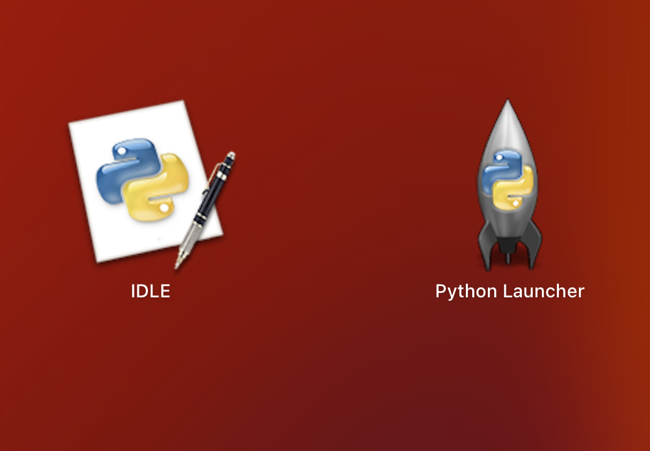

Basic Introduction to Python
In this tutorial you will learn about:
- how to install Python
- the various elements of Python
- some of Python's built-in functions
- if statements
- how functions work
Welcome! Thank you for choosing this tutorial, let's get started 😃. First off, we need to install Python, if you already have Python installed, or don't want to install it, feel free to skip ahead to the next lesson otherwise keep reading 😉.
To download python you'll have to head on over to python.org, once your there click the Download button to install the latest version of Python on your computer, once the file has been downloaded, open it 📂.
Once you've opened the file you should be prompted with an installation window, 🤓 read the details carefully and make sure you're installing the latest version and for the right operating system. Click continue in the bottom right corner and read through the Read-Me 📖 file and accept any license agreements, continue in this manner until you reach the installation. Click install.
Wait a few moments for Python to install. When it has finished installing, you should see two new apps, IDLE and Python Launcher.
The only one we need to use is IDLE, if you want to know more about the Python Launcher, click here, otherwise you can ignore the Launcher for the rest of this tutorial 😄. The last step is to open the IDLE app, when you do, you should be presented with this window:

If you see this window, congratulations 🥳! You have successfully installed Python.